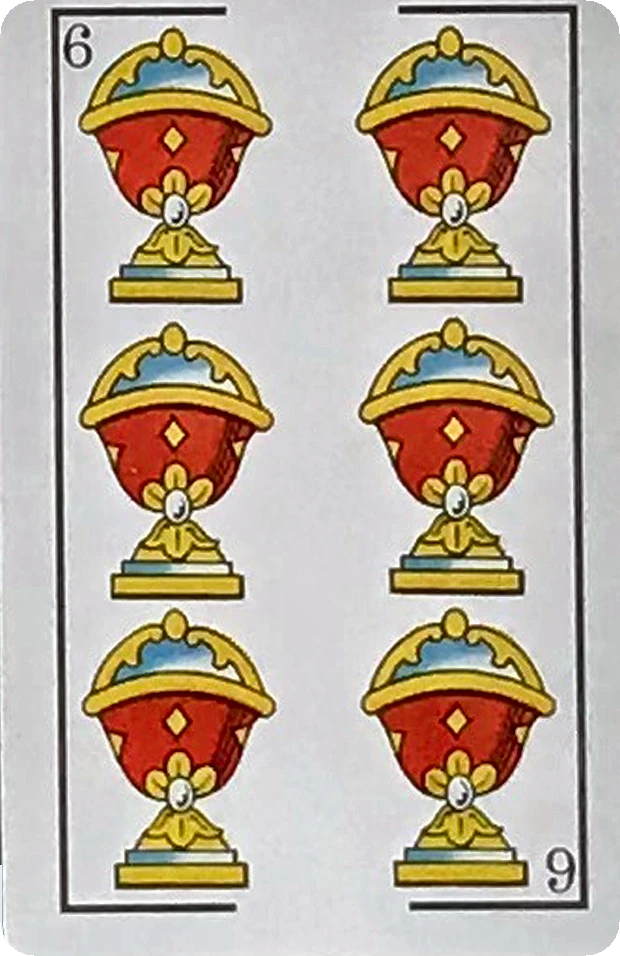

CARRERA · TROFEOS · RIVALES · PERSONALIZACIÓN
Sala Cero
Cinco mesas completas comparten perfil y estadísticas: Tute, Generala, Chinchón, Escoba de 15 y Culo / Presidente. Todo funciona localmente, sin cuentas y sin conexión.
T


NAIPES ESPAÑOLESTute
Partida contra IA, mesas locales, tutorial adaptativo y normas personalizadas dentro de su propio club.
Entrar al club del Tute →
G
 4256
4256
4256
CUBILETE Y CINCO DADOSGenerala
Mesa clásica, tirada fluida, planilla automática, IA y multijugador local para hasta seis personas.
Ir a la mesa de Generala →
C



ESCALERAS Y GRUPOSChinchón
Siete cartas, robo del mazo o descarte, cierre, penalizaciones, IA y partidas locales para hasta cuatro personas.
Entrar a la mesa de Chinchón →
15


ESCOBA
SUMA QUINCE Y CAPTURAEscoba
Combinaciones automáticas, capturas manuales, escobas, puntuación completa, IA y multijugador local.
Jugar a la Escoba de 15 →
P


PRESIDENTE
RANGOS, PASES Y REVOLUCIÓNCulo
De tres a seis jugadores, IA, pasa el móvil, cargos entre manos, intercambio de cartas y variantes configurables.
Luchar por la presidencia →♛
ACTUALIZADO V20.1
Carrera de Sala Cero
Disputa el Circuito de Iniciación, las copas de Tute, Generala y Juegos de Salón —ahora también con Culo—, y el campeonato definitivo. Tus rivales cambian de estrategia según su personalidad.
Circuito de iniciaciónLa primera mesa está preparada.Abrir carrera →
RESUMEN DEL CLUB
Tu trayectoria
Los datos se guardan únicamente en este dispositivo y se actualizan al terminar las partidas.
SE RENUEVAN CADA DÍA
Retos del club
Completa los objetivos y cobra la experiencia desde esta portada.
VITRINA DE SALA CERO
Logros
Las insignias se desbloquean automáticamente al jugar.
Personalización
Los ambientes se desbloquean al subir de nivel y se aplican a toda Sala Cero.
Últimas partidas
Historial local de las ocho mesas más recientes.